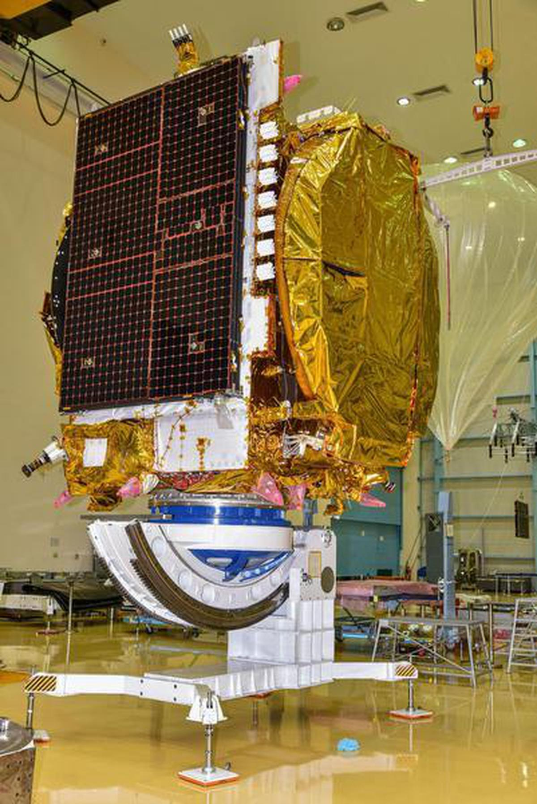
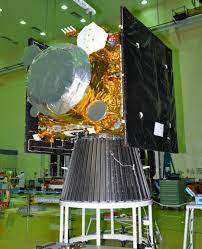

The GSAT (Geosynchronous Satellite) series of geosynchronous satellites is a system developed by ISRO with an objective to make India self-reliant in broadcasting services. The system includes a total of 168 transponders (out of which 95 are leased out to provide services to broadcasters) in the C, Extended C and Ku bands, providing services to telecommunications, television broadcasting, weather forecasting, disaster warning and search and rescue operations.
# System Overview:
1.Geostationary Orbit:
GSAT satellites operate in geostationary orbit, approximately 36,000 km above the equator.
2.Multi-band Communication:
GSAT satellites support multiple frequency bands, including C-band, Ku-band, and Ka-band.
3.High-power Transponders:
GSAT satellites have high-power transponders, enabling reliable and efficient communication services.
4.Advanced Antenna Systems:
GSAT satellites feature advanced antenna systems, providing high-gain and directional communication capabilities.

# Development and Launch:
1.Design and Planning:
The Indian Space Research Organisation (ISRO) designs and plans GSAT satellites, considering factors like payload, orbit, and launch vehicle requirements.
2.Payload Development:
ISRO develops the payloads, including transponders, antennas, and other communication equipment.
3.Satellite Integration:
The payloads are integrated with the satellite bus, which includes the structure, power, and propulsion systems.
4.Launch:
ISRO uses its Geosynchronous Satellite Launch Vehicle (GSLV) or the Ariane 5 launch vehicle (in some cases) to launch GSAT satellites.
Some of notable GSAT Launches:
1. GSAT-1 (2001): First GSAT satellite, launched on April 18, 2001, using the GSLV-D1 launch vehicle.
2. GSAT-2 (2003): Launched on May 8, 2003, using the GSLV-D2 launch vehicle.
3. GSAT-10 (2012): Launched on September 29, 2012, using the Ariane 5 VA-209 launch vehicle.
4. GSAT-29 (2018): Launched on November 14, 2018, using the GSLV Mk III-D2 launch vehicle.
5. GSAT-30 (2020): Launched on January 17, 2020, using the Ariane 5 VA-251 launch vehicle.
ISRO has successfully launched numerous GSAT satellites, demonstrating its capabilities in satellite development and launch.
# Applications:
1. Telecommunications:
GSAT satellites provide telecommunications services, including voice, data, and video transmission.
2. Broadcasting:
GSAT satellites support broadcasting services, enabling transmission of television channels and radio programs.
3. Weather Forecasting:
GSAT satellites carry weather sensors, providing data for weather forecasting and climate monitoring.
4. Disaster Management:
GSAT satellites support disaster management efforts, enabling communication and data transmission during emergencies.
5. Navigation:
GSAT satellites provide navigation services, supporting maritime, aviation, and land transportation.
# Benefits:
1. Improved Communication:
GSAT satellites enhance communication services, connecting remote and rural areas.
2. Enhanced Broadcasting:
GSAT satellites support high-quality broadcasting services, expanding access to information and entertainment.
3. Accurate Weather Forecasting:
GSAT satellites provide critical weather data, enabling accurate forecasting and climate monitoring.
4. Effective Disaster Management:
GSAT satellites support disaster response efforts, facilitating communication and data transmission.
5. Economic Growth:
GSAT satellites contribute to economic growth, enabling efficient communication, broadcasting, and navigation services.

This navigation satellite system was developed because access to foreign government-controlled global navigation satellite systems is not guaranteed in hostile situations, as happened to the Indian military in 1999 when the United States denied an Indian request for Global Positioning System (GPS) data for the Kargil region, which would have provided vital information.The Indian government approved the project in May 2006.Indian Regional Navigation Satellite System (IRNSS), with an operational name of NavIC (Navigation with Indian Constellation), is an autonomous regional satellite navigation system that provides accurate real-time positioning and timing services.It covers India and a region extending 1,500 km (930 mi) around it, with plans for further extension up to 3,000 km (1,900 mi).
# System Overview:
1.Constellation:
NAVIC consists of 8 satellites, with 7 active and 1 standby.
2.Orbit:
The satellites operate in geosynchronous orbit, approximately 36,000 km above the equator.
3.Coverage:
NAVIC provides navigation services over India and the surrounding region, extending up to 1,500 km.
4.Dual-frequency:
NAVIC operates on two frequencies, L5 and S-band, providing better accuracy and reliability.

# Development and Launch:
1. Development:
NAVIC was developed by the Indian Space Research Organisation (ISRO).
2. Launch:
The first NAVIC satellite was launched in 2013, with the entire constellation operational since 2018.
# Future Plans:
1. Expansion:
ISRO plans to expand NAVIC's coverage area and improve its accuracy.
2. Upgrades:
Future upgrades will include the addition of more satellites and advanced features.
# Features and Benefits:
1.Accuracy:
NAVIC offers positioning accuracy of up to 10 meters.
2.Self-reliance:
NAVIC reduces India's dependence on foreign navigation systems like GPS.
3.Regional navigation:
NAVIC provides navigation services tailored to India's regional needs.
4.Aviation:
NAVIC aids navigation for aircraft, enhancing safety and efficiency.
5.Maritime:
NAVIC supports navigation for ships and boats, improving maritime safety and trade.
6.Land transportation:
NAVIC supports navigation for vehicles, enhancing road safety and logistics.
7.Disaster management:
NAVIC provides critical location information during natural disasters and emergencies.